2.1. Phương pháp số cho bài toán giá trị ban đầu¶
Bài toán Cauchy bậc nhất có dạng
Khi không tìm được nghiệm đóng, ta chọn lưới \(x_n = x_0 + n h\) và xây dựng các giá trị \(y_n\) xấp xỉ \(y(x_n)\). Hai phương pháp cơ bản là Euler hiện và Runge--Kutta bậc bốn (RK4).
2.1.1. Phương pháp Euler hiện¶
Khai triển Taylor tại \(x_n\) cho
Thay \(y' = f(x, y)\) và bỏ số hạng dư, ta được
Đây là phép tiến một bước theo tiếp tuyến tại đầu đoạn. Sai số cục bộ có cấp \(O(h^2)\), còn sai số toàn cục trên một khoảng cố định có cấp \(O(h)\).
{kind=link}
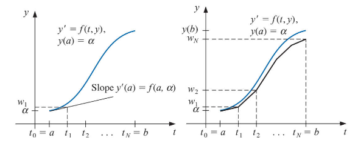
Hình 2.1 Mỗi bước Euler thay đường nghiệm bằng một đoạn tiếp tuyến.¶
2.1.2. Phương pháp Runge--Kutta bậc bốn¶
RK4 lấy bốn ước lượng độ dốc trong một bước:
rồi kết hợp chúng theo công thức
Sai số cục bộ của RK4 có cấp \(O(h^5)\) và sai số toàn cục có cấp \(O(h^4)\), với giả thiết \(f\) đủ trơn trên miền đang xét.
{kind=link}
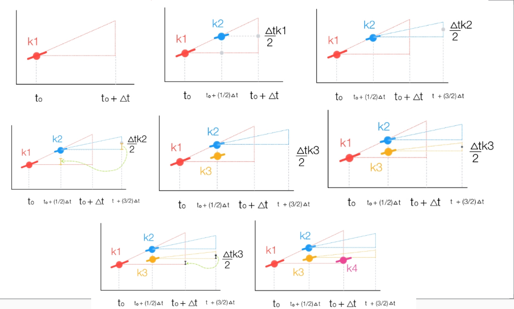
Hình 2.2 Bốn độ dốc được dùng để xây dựng một bước RK4.¶
2.1.3. Ví dụ so sánh¶
Xét bài toán
Trên miền \(|x| < 1\), phương trình chuẩn là
Tách biến cho
Từ điều kiện đầu, nghiệm đúng là
Mẫu số triệt tiêu tại \(x = \sqrt{1 - e^{-1}} \approx 0.795\); vì vậy ví dụ số chỉ xét \(0 \leqslant x \leqslant 0.7\).
{kind=link}
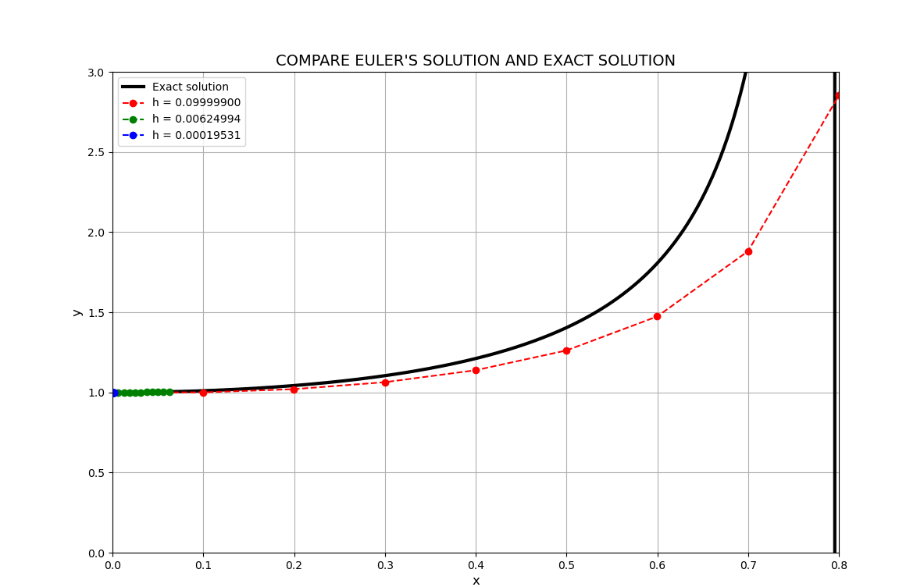
Hình 2.3 Nghiệm Euler tiến gần nghiệm đúng khi giảm bước \(h\).¶
{kind=link}
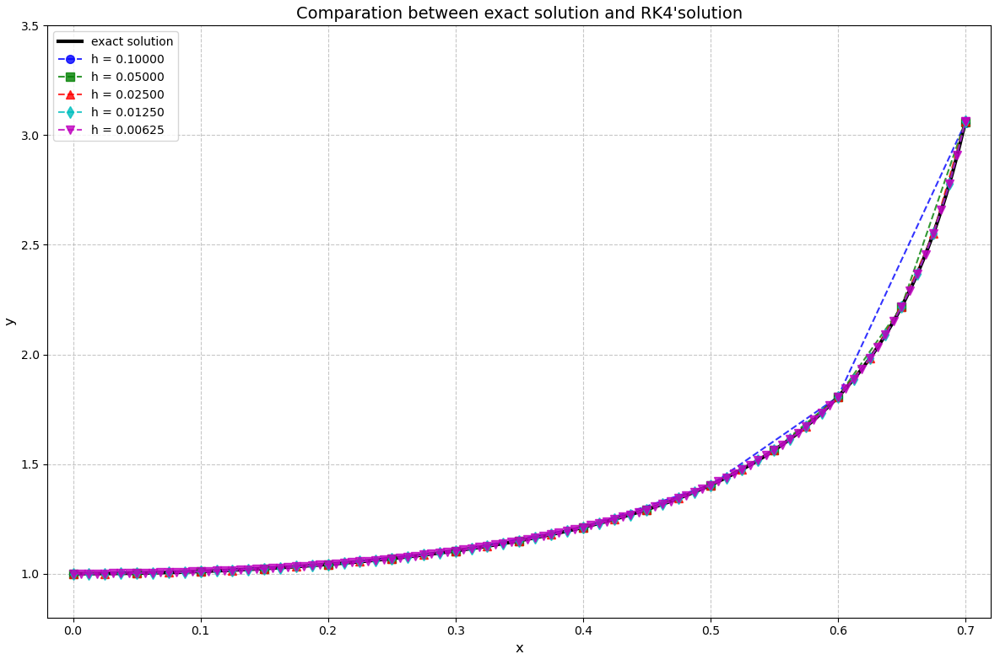
Hình 2.4 So sánh nghiệm RK4 ứng với nhiều kích thước bước.¶
2.1.4. Đo bậc hội tụ¶
Nếu sai số thỏa \(\varepsilon(h) \approx C h^p\), lấy logarithm cho
Vì vậy độ dốc của đường hồi quy giữa \(\ln h\) và \(\ln \varepsilon\) xấp xỉ bậc \(p\) của phương pháp. Khi giảm \(h\) một nửa, Euler thường giảm sai số khoảng \(2\) lần, còn RK4 giảm khoảng \(2^4 = 16\) lần trước khi sai số làm tròn chi phối.
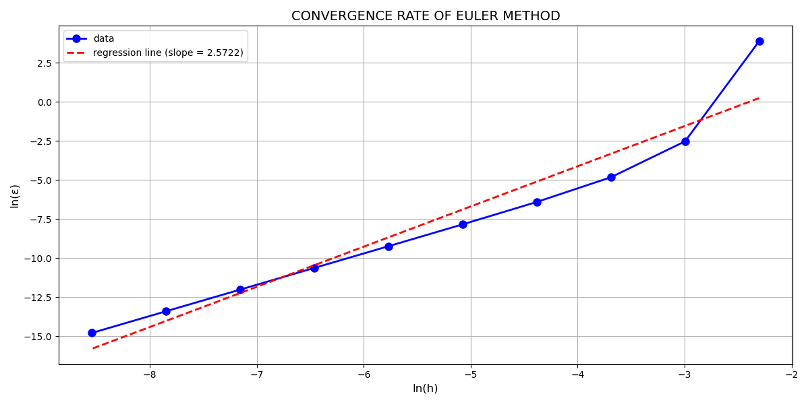 |
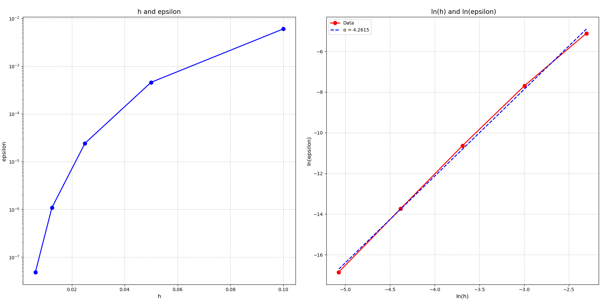 |
Euler: độ dốc xấp xỉ \(1\) |
RK4: độ dốc xấp xỉ \(4\) |
2.1.5. Code demo¶
Chương trình sau cài đặt cả hai phương pháp chỉ với thư viện chuẩn:
1"""So sánh Euler và Runge--Kutta bậc 4 cho một bài toán Cauchy."""
2
3from math import log
4
5
6def f(x: float, y: float) -> float:
7 """Vế phải y' = f(x, y)."""
8 return -2.0 * x * y**2 / (x**2 - 1.0)
9
10
11def exact(x: float) -> float:
12 """Nghiệm đúng thỏa y(0) = 1, trước điểm kỳ dị đầu tiên."""
13 return 1.0 / (1.0 + log(1.0 - x**2))
14
15
16def euler_step(x: float, y: float, h: float) -> float:
17 return y + h * f(x, y)
18
19
20def rk4_step(x: float, y: float, h: float) -> float:
21 k1 = f(x, y)
22 k2 = f(x + h / 2.0, y + h * k1 / 2.0)
23 k3 = f(x + h / 2.0, y + h * k2 / 2.0)
24 k4 = f(x + h, y + h * k3)
25 return y + h * (k1 + 2.0 * k2 + 2.0 * k3 + k4) / 6.0
26
27
28def solve(step, x0: float, y0: float, x_end: float, h: float) -> float:
29 """Tích phân với bước đều; ví dụ chọn x_end/h là số nguyên."""
30 x, y = x0, y0
31 for _ in range(round((x_end - x0) / h)):
32 y = step(x, y, h)
33 x += h
34 return y
35
36
37if __name__ == "__main__":
38 x_end = 0.5
39 y_exact = exact(x_end)
40 print("h Euler error RK4 error")
41 for h in (0.1, 0.05, 0.025, 0.0125):
42 y_euler = solve(euler_step, 0.0, 1.0, x_end, h)
43 y_rk4 = solve(rk4_step, 0.0, 1.0, x_end, h)
44 print(f"{h:<10g} {abs(y_euler-y_exact):<17.9e} "
45 f"{abs(y_rk4-y_exact):.9e}")
Các chương trình gốc dùng NumPy và Matplotlib vẫn được giữ để tái tạo bảng và đồ thị:
2.1.6. Ảnh kết quả bổ sung¶
Các ảnh bảng kết quả theo từng bước được giữ lại để đối chiếu với code gốc.
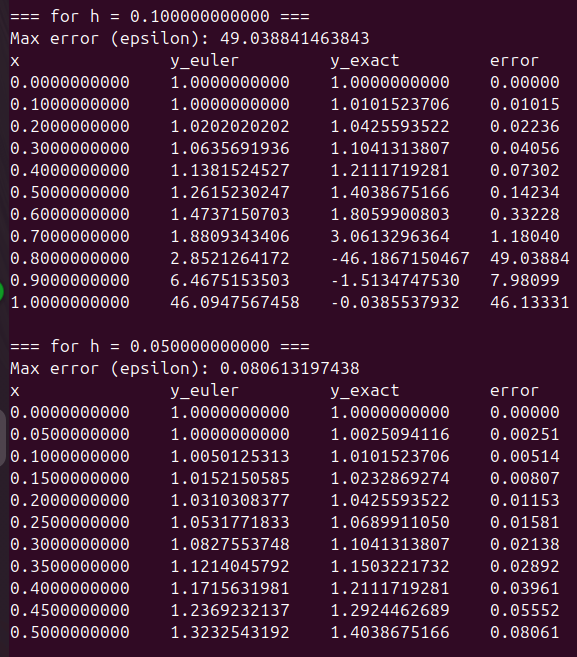 |
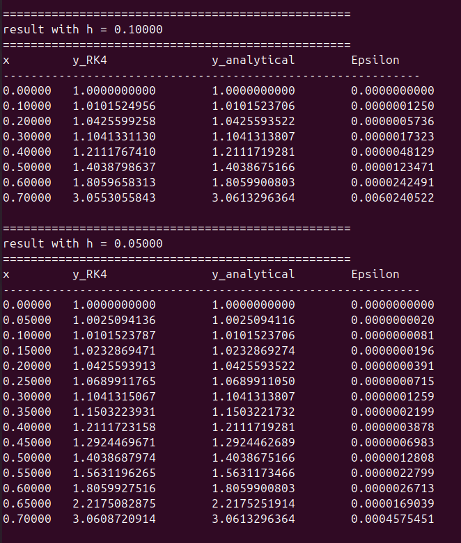 |
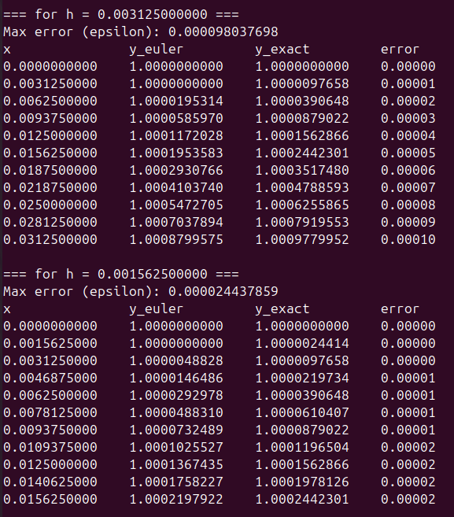 |
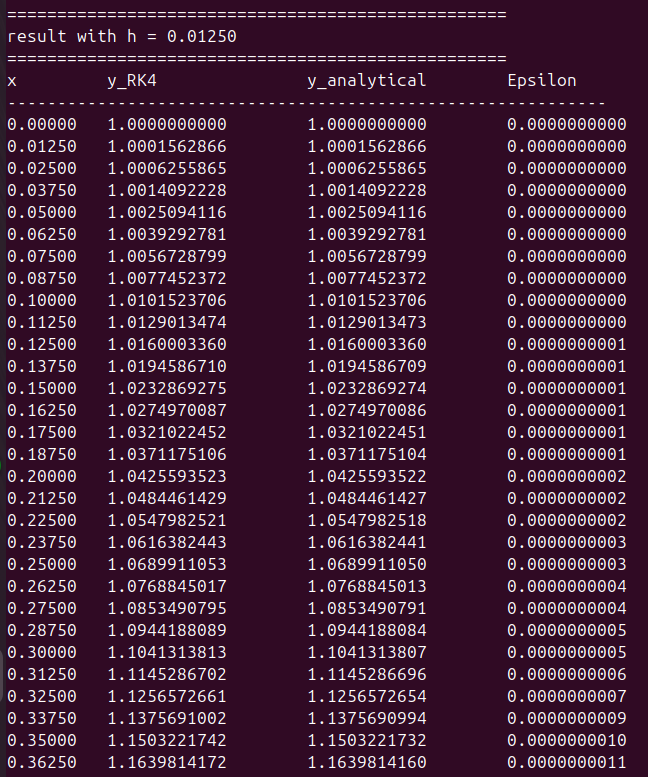 |
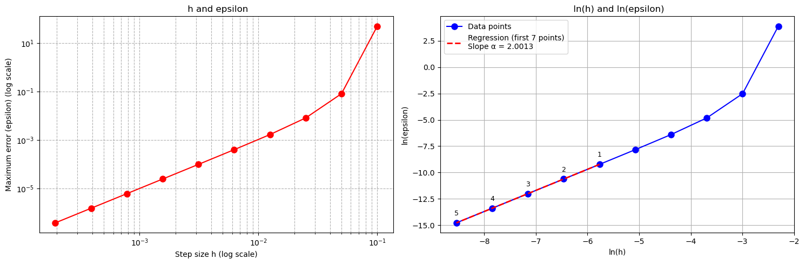 |
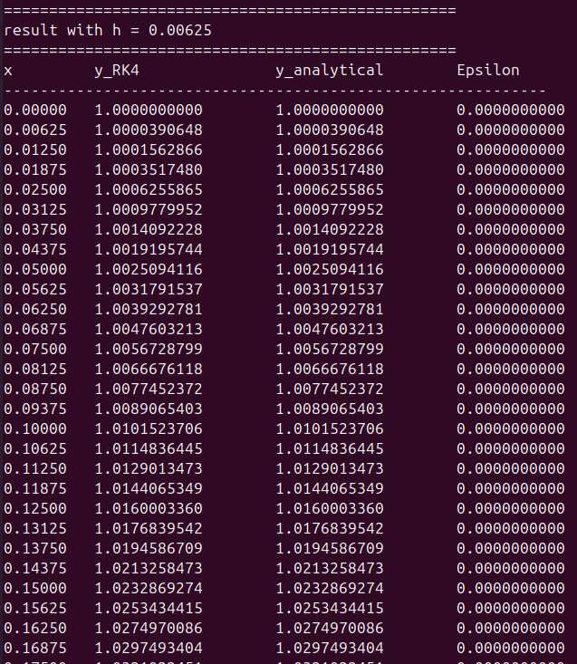 |
Hai ảnh euler-comparison.png và rk4-error.png là các phiên bản thử
ban đầu; bản hiệu chỉnh được dùng trong nội dung chính. Tệp
images/source-logo.png được lưu như một phần nguồn của báo cáo.